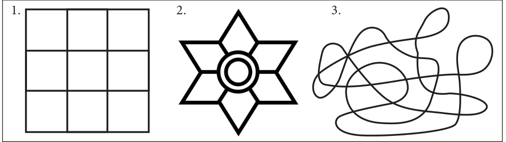
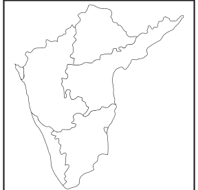
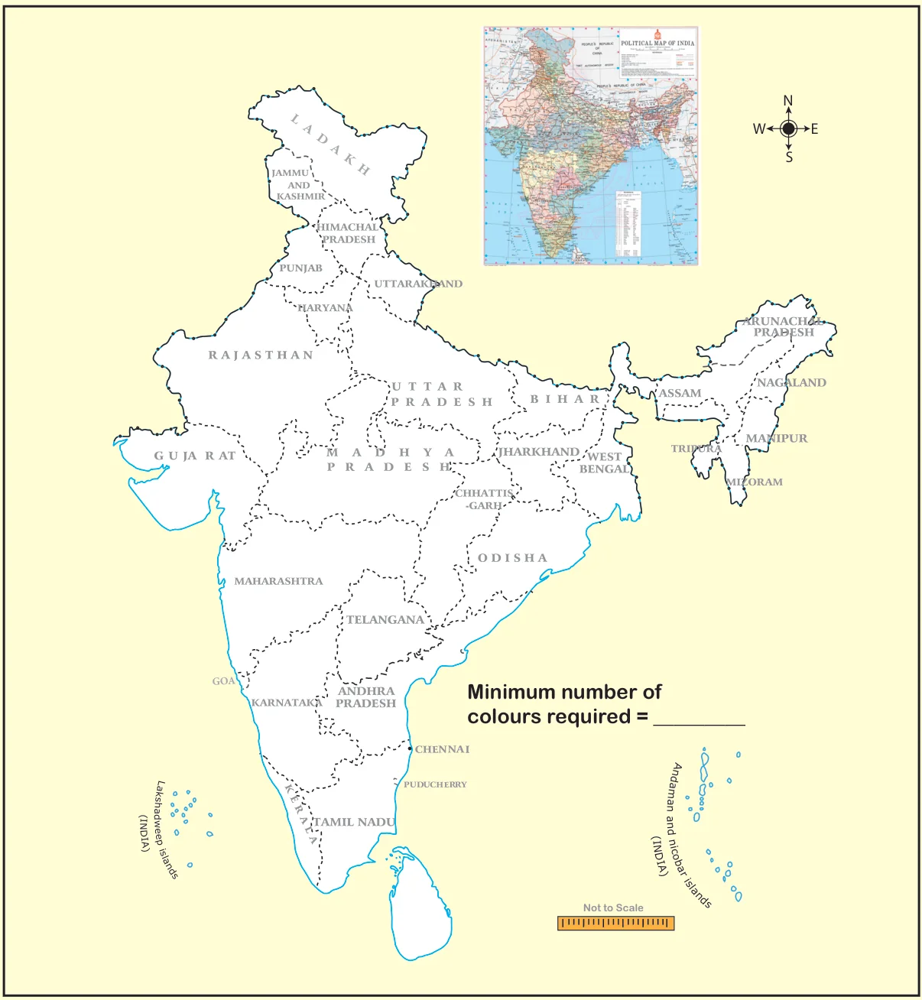

Map colouring is the act of assigning different colours to different features on a map. In Mathematics, the problem is to determine the minimum number of colours required to colour a map,so that no two adjacent regions have the same colour. Let us learn about the role of map colouring.
Situation:
The teacher divides the class into two groups and instructs one group to use as many colours possible and another group use minimum number of colours for the given patterns.
The only rule is that, shaded regions cannot share the same colour at edges, although they are allowed to meet at a corner.

Fig. 7.15 , shows how each group is coloured

From this investigation, we will get results. Which could be more interesting , if we want to colour a map. Map colouring is about the colours that must be chosen for regions in a map, which make bordering regions with different colours. Let us learn more from the following examples.
Example 7.6
Colour a map of South India (Fig. 7.16) with the fewest number of colours.
Solution:


This is one of the solutions with minimum number of colours . Try for more solutions.
Activity
Try to colour the INDIA-States map with the fewest number of colours.

Try these
Draw your school building map showing the HM room, class rooms, staff room, science lab, PET room, computer lab, office room etc., and use map colouring to detetermine the minimum number of colours that can be used to colour the map of your school.